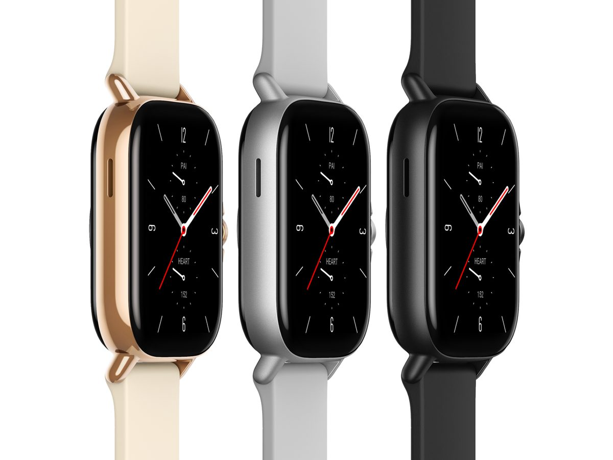

#ACCESSORI👥
⬆️📌Amazfit GTS 2: prezzo, caratteristiche, uscita e notizie in Italia.
Amazfit GTS 2 è uno smartwatch lanciato in Cina il 22 settembre 2020 insieme ad Amazfit GTR 2, ed è il successore di Amazfit GTS. Il dispositivo punta agli utenti che desiderano spendere poco e ritrovarsi uno SMART WATCH comunque completo e di buona qualità.
Di seguito alcuni approfondimenti:
✅ Amazfit GTS 2 dispone di un display AMOLED rettangolare da 1,65 pollici a risoluzione 348 x 442 (341 ppi), con una luminosità di 450 nits, di 4 GB di memoria interna e di una batteria da 246 mAh, che secondo la casa produttrice risulta sufficiente per un’autonomia di 7 giorni con uso classico e di 20 giorni con risparmio energetico (la ricarica avviene in 2 ore). Presenti il sensore PPG BioTracker 2, Bluetooth 5.0, NFC per i pagamenti in mobilità, Wi-Fi 2,4 GHz, accelerometro, giroscopio, sensore geomagnetico e sensore di luminosità.
✅ Amazfit GTS 2 è piuttosto simile al predecessore Amazfit GTS. Esso dispone di una cassa rettangolare con un vetro 3D che, grazie a una particolare tipologia di lavorazione, dovrebbe garantire resistenza ai graffi. Il display ha bordi sottili e si fonde quasi con il resto dello smartwatch.
Viene venduto in tre colorazioni (nero, argento e oro), tutte con corpo in alluminio e guscio inferiore in plastica. La dimensione è di 42,8 x 35,6 x 9,7 mm, con un peso di 24,7 grammi. Il cinturino è da 20 mm ed è in silicone.
✅ Amazfit GTS 2 è in grado di tracciare 12 diverse modalità di allenamento (in futuro il numero dovrebbe crescere) e può contare sul sistema PAI per il calcolo di livello di stress e non solo. Tra le varie funzioni, possiamo citare la misurazione dei livelli di saturazione dell’ossigeno nel sangue (SpO2) e il monitoraggio del battito cardiaco 24 ore su 24 con il sensore PPG BioTracker 2. Non mancano ovviamente il conteggio dei passi e la rilevazione della qualità del sonno.
✅ Resistente alle immersioni fino a 5 ATM, supporta sia Android sia iOS e dispone dell’assistente vocale. Lo smartwatch può essere utilizzato anche per rispondere alle chiamate in arrivo sul telefono grazie all’altoparlante e al microfono integrati.
Amazfit GTS 2 è stato presentato in Italia il giorno 27 ottobre 2020 ed è in vendita da allora in vari colori al prezzo ufficiale di 169,90 euro.
https://amazfit.shop/smartwatch/gts2
Se lo desideri, iscriviti ai mie canali social per restare aggiornato ⬇️
Social MediaInoltre se hai trovato utile ed interessante questo articolo, non esitare a condividerlo, a lasciare un tuo mi piace 👍, o seguire la mia pagina Facebook per sostenermi e continuare ad informare. Grazie anticipatamente a chi vorrà farlo.